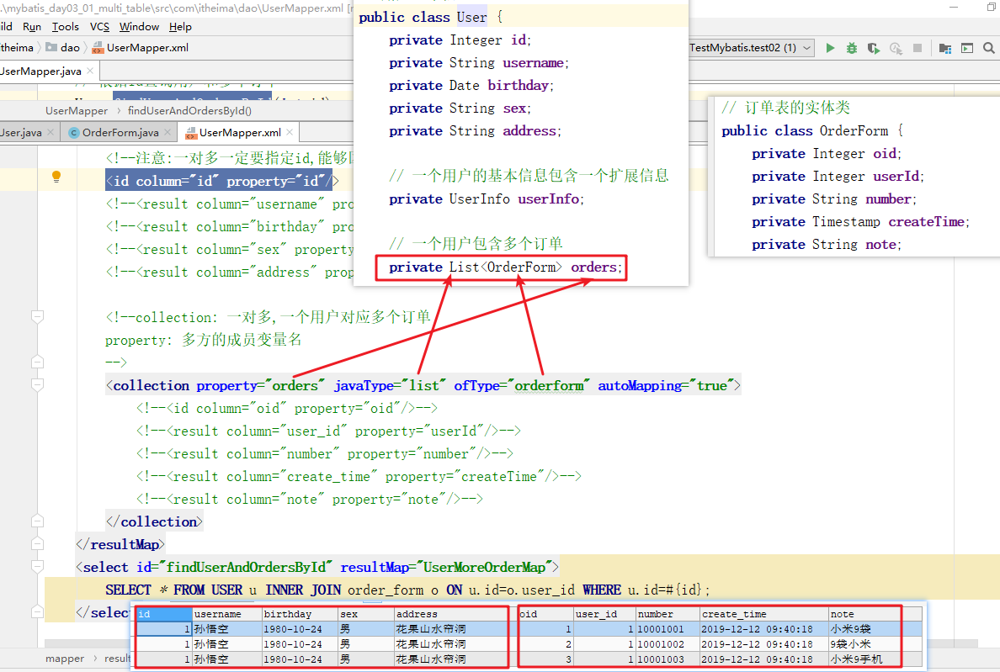

MyBatis(03)多表关联
回顾
- 说说核心配置文件中这些标签的作用
| 配置标签名称 | 功能 |
|---|---|
| properties | 加载外部properties文件 |
| typeAliases(重要) | 给实体类取别名 |
| mappers | 指定映射文件的位置 |
- 说说下面映射文件中标签的作用
| 标签 | 子标签 | 说明 |
|---|---|---|
| <select> | 编写查询的SQL语句 | |
| <insert> | 编写插入的SQL语句 | |
| 得到插入数据的ID | ||
| <update> | 编写修改的SQL语句 | |
| <delete> | 编写删除的SQL语句 |
- resultMap标签的作用(对结果进行映射)
| 标签名 | 属性 |
|---|---|
| resultMap | 对查询的结果进行映射到实体类中 |
| 子标签id和result | id指定主键的对应关系 result指定普通字段的对应关系 |
动态SQL
什么是动态SQL: 根据用户的选择不同，要拼接出不同的SQL语句
if标签的格式:
<if test="条件">
SQL片段
</if>
if标签的作用: 做判断，如果条件为true,就拼接SQL片段
<where></where>
where标签的作用:
1.相当于WHERE关键字
2.去掉多余的AND 或 OR
<set></set>
set标签的作用:
1.相当于SET关键字
2.去掉多余的,逗号
<foreach></foreach>
foreach标签的作用: 遍历数组或集合
collection属性: 遍历数组写array,遍历集合写list
open属性: 在遍历前拼接的内容
close属性: 在遍历后拼接的内容
item属性: 遍历的数据会放到这个变量中
separator: 每次遍历一个元素后拼接的内容学习目标
- 掌握 MyBatis 多表关联查询
- MyBatis 的延迟加载
- 注解实现多表关联查询
- 掌握二级缓存的开启配置
今日模块名
mybatis_day03_01_multi_table: 多表关联查询
mybatis_day03_02_lazy: 延迟加载
mybatis_day03_03_anno: 注解开发MyBatis
回顾表之间的关系
目标
回顾表之间的关系
表之间的关系分类
一对一关联关系
一个用户，有一个扩展信息
一对多关联关系
一个用户，有多个订单
多对多关联关系
用户与角色： 一个用户有多个角色（一对多），一个角色有多个用户（一对多）
在实际项目中，多对多关系通过中间表，看成两个一对多关联关系。
多表关联：一对一关联（重要）
目标
需求：查询1号用户和他的扩展信息，一对一关联
步骤
- 创建数据库表
- 创建模块
- 写实体类
- dao接口
- 对结果映射
- 测试
创建数据库表
用户基本信息表与用户扩展信息表的关系
用户表与用户扩展信息表
CREATE DATABASE day22;
USE day22;
-- 创建用户基本表
CREATE TABLE USER (
id INT PRIMARY KEY AUTO_INCREMENT,
username VARCHAR(20) NOT NULL,
birthday DATE,
sex CHAR(1) DEFAULT '男',
address VARCHAR(50)
);
INSERT INTO USER VALUES (NULL, '孙悟空','1980-10-24','男','花果山水帘洞');
INSERT INTO USER VALUES (NULL, '白骨精','1992-11-12','女','白虎岭白骨洞');
INSERT INTO USER VALUES (NULL, '猪八戒','1983-05-20','男','福临山云栈洞');
INSERT INTO USER VALUES (NULL, '蜘蛛精','1995-03-22','女','盤丝洞');
-- 用户扩展信息表，一个用户对应一条用户扩展信息
CREATE TABLE user_info (
id INT PRIMARY KEY, -- 既是主键又是外键
height DOUBLE, -- 身高厘米
weight DOUBLE, -- 体重公斤
married TINYINT, -- 是否结婚，1为结婚，0为未婚
FOREIGN KEY (id) REFERENCES USER(id)
);
-- 插入用户扩展信息表
INSERT INTO user_info VALUES(1,185,90,1),(2,170,60,0);编写关联查询sql语句，查询1号用户和他的扩展信息
SELECT * FROM USER u INNER JOIN user_info i ON u.id = i.id WHERE u.id=1;查询结果
创建模块
创建新的模块：mybatis_day03_01_multi_table
编写实体类
一个用户对应一个扩展信息User类
// 用户基本信息类
public class User {
private Integer id; // 主键
private String username; // 用户名
private Date birthday; // 生日
private String sex; // 性别
private String address; // 地址
// 省略getter/setter
}UserInfo类
// 用户扩展信息类
public class UserInfo {
private Integer id; // 主键
private Double height; // 身高
private Double weight; // 体重
private Boolean married; // 是否结婚
// 省略getter/setter
}类之间的关系
UserMapper接口
编写方法通过uid查找用户和扩展信息
/**
通过uid查找用户和扩展信息
*/
User findUserAndInfo(int uid);接口映射UserMapper.xml的配置
association标签的作用：用来指定类的关联关系
| association标签的属性 | 说明 |
|---|---|
| property | 指定另一方对象的属性名字，如：userInfo |
| resultMap |
配置步骤：
定义User的映射UserOneUserInfoMap，包含主键和所有的属性，无论属性名与列名是否相同。
使用association定义一对一关联映射，指定：property，column，javaType，子标签UserInfo字段的映射。
代码
<resultMap id="UserOneUserInfoMap" type="user">
<id property="id" column="id"/>
<result property="username" column="username"/>
<result property="birthday" column="birthday"/>
<result property="sex" column="sex"/>
<result property="address" column="address"/>
<!--一对一关联关系,User类中包含一个UserInfo类,名称为userInfo-->
<association property="userInfo" javaType="com.itheima.entity.UserInfo">
<id property="id" column="id"/>
<result property="height" column="height"/>
<result property="weight" column="weight"/>
<result property="married" column="married"/>
</association>
</resultMap>
<select id="findUserAndInfo" parameterType="int" resultMap="UserOneUserInfoMap">
SELECT * FROM USER u INNER JOIN user_info i ON u.id = i.id WHERE u.id=#{id};
</select>测试
public class TestUserMapper {
private static SqlSessionFactory factory; // 会话工厂
private SqlSession session; // 会话
// 创建工厂对象
// 创建会话对象，自动提交事务
@Before
public void begin() throws IOException {
SqlSessionFactoryBuilder builder = new SqlSessionFactoryBuilder();
InputStream inputStream = Resources.getResourceAsStream("sqlMapConfig.xml");
factory = builder.build(inputStream);
session = factory.openSession();
}
// 关闭会话
@After
public void end() {
session.commit();
session.close();
}
@Test
public void testFindUserAndInfo() {
UserMapper userMapper = session.getMapper(UserMapper.class); // 得到代理对象
User user = userMapper.findUserAndInfo(1);
System.out.println("user = " + user);
}
}注意
多表查询的时候使用resultMap封装结果时，即使字段名和类的属性名相同也需要指定。可以搞autoMapping=true
小结
一对一关联查询实体类的关系?
public class User { private Integer id; private String username; private Date birthday; private String sex; private String address; // 一个用户包含一个扩展信息 private UserInfo userInfo; }
在接口映射文件种使用哪个标签指定一对一关联?
<resultMap id="userAndInfoMap" type="user" autoMapping="true"> <!-- association: 配置一对一关系: 一个用户对应一个扩展信息 property: 类中另一方的成员变量名 javaType: 类中另一方的类型 --> <association property="userInfo" javaType="UserInfo" autoMapping="true"> </association> </resultMap> <select id="findUserAndInfo" parameterType="int" resultMap="userAndInfoMap"> SELECT * FROM USER INNER JOIN user_info ON user_info.id=user.id WHERE user.id=#{id}; </select>
多表关联：一对多关联（重要）
目标
需求：查询某个用户，并且查询关联用户的多个订单信息
分析用户订单数据模型
步骤
- 创建数据库表
- 编写实体类
- dao接口添加方法
- 接口映射配置SQL
- 测试
创建数据库表
-- 创建订单表
CREATE TABLE order_form (
oid INT PRIMARY KEY AUTO_INCREMENT , -- 主键
user_id INT NOT NULL, -- 用户id，外键
number VARCHAR(20), -- 订单编号
create_time DATETIME, -- 下单时间
note VARCHAR(100), -- 备注
FOREIGN KEY(user_id) REFERENCES USER(id) -- 外键约束，关联主表的主键
);
-- 添加订单数据
INSERT INTO order_form VALUES(NULL, 1,'10001001', NOW(), '小米9袋'),(NULL, 1,'10001002', NOW(), '9袋小米'),(NULL, 1,'10001003', NOW(), '小米9手机');
INSERT INTO order_form VALUES(NULL, 2,'10001004', NOW(), '逃生锤'),(NULL, 2,'10001005', NOW(), '安全带');表与表的关系
查询某个用户，并且查询关联用户的多个订单信息
select * from user u inner join order_form o on u.id = o.user_id where u.id=1;查询结果
编写实体类
一个用户对应多个订单编写用户订单类
package com.itheima.entity;
import java.sql.Timestamp;
/**
订单实体类
*/
public class OrderForm {
private Integer oid; // 主键
private Integer userId; // 外键
private String number; // 订单号
private Timestamp createTime; // 下单时间
private String note; // 备注信息
// 省略getter/setter/toString
}用户类添加订单属性

用户实体类对象
- 建立用户到订单的一对多关联关系，在User中创建List<OrderForm> orders
package com.itheima.entity;
import java.sql.Date;
import java.util.List;
/**
用户实体类对象 */
public class User {
private Integer id;
private String username;
private Date birthday;
private String sex;
private String address;
private List<OrderForm> orders; // 对应的所有订单信息
private UserInfo userInfo; // 对应的用户信息
// 省略getter/setter/toString
}声明UserMapper接口方法
/*
查询指定的用户数据
并且关联查询用户的所有订单数据
*/
User findUserAndOrders(int uid);UserMapper.xml映射配置文件
collection的作用：一对多的关联映射
| collection的属性 | 说明 |
|---|---|
| property | 多方属性的名字，指：orders |
| javaType | 属性的类型 |
| ofType | 每个元素的类型：OrderForm |
| resultMap | 指定订单的映射 |
接口映射文件配置
定义订单的映射orderMap
collection：配置一对多关联关系，指定property，ofType，resultMap为orderMap
查询某个用户，并且查询关联的多个订单信息
UserMapper.xml
<?xml version="1.0" encoding="UTF-8" ?>
<!DOCTYPE mapper
PUBLIC "-//mybatis.org//DTD Mapper 3.0//EN"
"http://mybatis.org/dtd/mybatis-3-mapper.dtd" >
<mapper namespace="com.itheima.dao.UserMapper">
...
<resultMap id="UseMoreOrderMap" type="user">
<id property="id" column="id"/>
<result property="username" column="username"/>
<result property="birthday" column="birthday"/>
<result property="sex" column="sex"/>
<result property="address" column="address"/>
<!--一对多关系,一个User包含多个订单,使用collection-->
<collection property="orders" javaType="List" ofType="OrderForm">
<id property="oid" column="oid"/>
<result property="userId" column="user_id"/>
<result property="number" column="number"/>
<result property="createTime" column="create_time"/>
<result property="note" column="note"/>
</collection>
</resultMap>
<!--查询指定的用户数据，并且关联查询用户的所有订单数据-->
<select id="findUserAndOrders" parameterType="int" resultMap="UseMoreOrderMap">
SELECT * FROM USER u INNER JOIN order_form o ON u.id = o.user_id WHERE u.id=#{uid};
</select>
</mapper>测试
- 查询1号用户的所有订单
- 得到用户信息
- 输出这个用户所有的订单信息
@Test
public void testFindUserAndOrders() {
UserMapper mapper = sqlSession.getMapper(UserMapper.class);
User user = mapper.findUserAndOrders(1);
System.out.println("user = " + user);
List<OrderForm> orders = user.getOrders();
for (OrderForm order : orders) {
System.out.println(order);
}
}执行效果
小结
实体类配置关系
- 查询的结果映射

多表关联：多对多关联
目标
多对多关联关系，可以通过中间表看成两个双向的一对多关联关系。
用户与角色多对多关系模型
一个用户对应多种角色
一种角色可以有多个用户
步骤
- 创建数据库表
- 写实体类
- dao接口
- 接口映射
- 测试
创建角色表和中间表
/*创建角色表*/
CREATE TABLE `role` (
role_id INT PRIMARY KEY AUTO_INCREMENT COMMENT '角色 id(主键)',
role_name VARCHAR(32) NOT NULL COMMENT '角色名称',
role_detail VARCHAR(100) DEFAULT NULL COMMENT '角色描述'
);
-- 插入角色记录
INSERT INTO role(role_name,role_detail) VALUES('校长','全校的管理者');
INSERT INTO role(role_name,role_detail) VALUES('讲师','传道授业解惑');
INSERT INTO role(role_name,role_detail) VALUES('班主任','班级的灵魂');
INSERT INTO role(role_name,role_detail) VALUES('助教','大家的朋友');
/*创建用户角色中间表*/
CREATE TABLE user_role (
user_id INT NOT NULL COMMENT '用户 id',
role_id INT NOT NULL COMMENT '角色 id',
PRIMARY KEY (user_id,role_id), -- 复合主键
FOREIGN KEY (user_id) REFERENCES `user`(id),
FOREIGN KEY (role_id) REFERENCES role(role_id)
);
INSERT INTO user_role(user_id,role_id) VALUES(1,1); -- 1 号用户对应 1 号角色
INSERT INTO user_role(user_id,role_id) VALUES(2,2);
INSERT INTO user_role(user_id,role_id) VALUES(6,2);
INSERT INTO user_role(user_id,role_id) VALUES(1,3);
INSERT INTO user_role(user_id,role_id) VALUES(2,1);
INSERT INTO user_role(user_id,role_id) VALUES(2,4);需求：查询 1 号用户有哪些角色
SELECT u.*, r.* FROM USER u INNER JOIN user_role ur ON u.id = ur.user_id INNER JOIN role r ON
ur.role_id = r.role_id WHERE u.id = 1;
类之间的关系
一个用户对应多种角色
一种角色可以有多个用户
Role 角色实体类，对应多个用户
public class Role {
private Integer roleId;
private String roleName;
private String roleDetail;
// 一个角色对应多个用户
private List<User> users;
// 省略get/set/构造方法
}public class User {
private Integer id; // 主键
private String username; // 用户名
private Date birthday; // 生日
private String sex; // 性别
private String address; // 地址
private UserInfo userInfo; // 用户包含扩展信息类
private List<OrderForm> orders; // 用户包含的所有订单信息
private List<Role> roles; // 一个用户包含多个角色
// 省略get/set/构造方法
}声明 UserMapper 接口
/**
通过 uid 查找用户和他的所有角色
*/
User findUserAndRolesByUserId(int uid);
/**
通过 role_id 查找角色和他的所有用户
*/
Role findRoleAndUsersByRoleId(int role_id);配置 UserMapper.xml
<?xml version="1.0" encoding="UTF-8" ?>
<!DOCTYPE mapper
PUBLIC "-//mybatis.org//DTD Mapper 3.0//EN"
"http://mybatis.org/dtd/mybatis-3-mapper.dtd">
<mapper namespace="com.itheima.dao.UserMapper">
<resultMap id="useRoleMapMore" type="user">
<id property="id" column="id"/>
<result property="username" column="username"/>
<result property="birthday" column="birthday"/>
<result property="sex" column="sex"/>
<result property="address" column="address"/>
<collection property="roles" javaType="list" ofType="role">
<id property="roleId" column="role_id"/>
<result property="roleName" column="role_name"/>
<result property="roleDetail" column="role_detail"/>
</collection>
</resultMap>
<!--多对多,通过用户id查询到一个用户里面的多个角色-->
<select id="findUserAndRolesByUserId" parameterType="int" resultMap="useRoleMapMore">
SELECT u.*, r.* FROM USER u INNER JOIN user_role ur ON u.id = ur.user_id INNER JOIN role r ON ur.role_id = r.role_id WHERE u.id = #{id};
</select>
<resultMap id="useRoleMapMore2" type="role">
<id property="roleId" column="role_id"/>
<result property="roleName" column="role_name"/>
<result property="roleDetail" column="role_detail"/>
<collection property="users" javaType="list" ofType="user">
<id property="id" column="id"/>
<result property="username" column="username"/>
<result property="birthday" column="birthday"/>
<result property="sex" column="sex"/>
<result property="address" column="address"/>
</collection>
</resultMap>
<!--多对多,通过 role_id 查找角色和他的所有用户-->
<select id="findRoleAndUsersByRoleId" parameterType="int" resultMap="useRoleMapMore2">
SELECT u.*, r.* FROM USER u INNER JOIN user_role ur ON u.id = ur.user_id INNER JOIN role r ON ur.role_id = r.role_id WHERE r.role_id = #{role_id};
</select>
</mapper>执行测试
@Test
public void test01() {
Role role = userMapper.findRoleAndUsersByRoleId(1);
System.out.println("role = " + role);
for (User user : role.getUsers()) {
System.out.println(user);
}
}多对多其实就是分成两个一对多处理
小结
多对多在数据库里建立第三张表中间表
在实体类中配置，双向一对多
配置接口映射文件
查询一个用户对应多个角色
<resultMap id="userAndRoleMap" type="user" autoMapping="true">
<id column="id" property="id"/>
<!--一对多,多方的信息-->
<collection property="roles" javaType="list" ofType="role" autoMapping="true">
<id column="role_id" property="roleId"/>
</collection>
</resultMap>
<!--通过uid查找用户和多个角色-->
<select id="findUserAndRolesByUserId" resultMap="userAndRoleMap">
SELECT * FROM USER INNER JOIN user_role ON user.id=user_role.user_id
INNER JOIN role ON user_role.role_id=role.role_id WHERE user.id=#{uid};
</select>一个角色对应多个用户
<resultMap id="roleAndUserMap" type="role" autoMapping="true">
<id column="role_id" property="roleId"/>
<!--配置一对多的多方信息-->
<collection property="users" javaType="list" ofType="user" autoMapping="true">
<id column="id" property="id"/>
</collection>
</resultMap>
<!--通过角色id rid查找角色和多个用户-->
<select id="findRoleAndUsersByRoleId" resultMap="roleAndUserMap">
SELECT * FROM USER INNER JOIN user_role ON user.id=user_role.user_id
INNER JOIN role ON user_role.role_id=role.role_id WHERE role.`role_id`=#{rid};
</select>关联映射小结
一对一
类之间的关系
配置关系

一对多
类之间的关系
配置关系
一对多自动映射一方一定要配id
association：一对一的延迟加载（了解）
刚才我们一对一使用表连接查询，直接查询出两张表中的数据
SELECT * FROM USER u INNER JOIN user_info i ON u.id = i.id WHERE u.id=1;有时候查询用户信息，不需要他的扩展信息。但后面有可能又需要用到，这时候可以通过延迟加载来实现。
目标
学习1对1的延迟加载
延迟加载介绍
延迟加载概念：也叫懒加载。指的是按需加载，在实际用到数据的时候才加载。
如：查询用户信息，不需要他的扩展信息。但后面有可能又需要用到，这时候可以通过延迟加载来实现。当需要扩展信息的时候，再发送一条SQL语句来查询扩展信息。好处是，只有在需要的时候才查询相应数据。提升查询的效率。相当于每次只查询1张表，而不是一次使用表连接查询所有的信息。
一对一关联查询使用标签：association
一对多关联查询使用标签：collection
需求
通过id查询1号用户User的基本信息
使用延迟加载的方式，关联查询出对应的用户扩展信息UserInfo
SQL语句分析
SELECT * FROM USER WHERE id=1;
SELECT * FROM user_info WHERE id=1;复制模块
- 复制项目为mybatis_day03_02_lazy
- 删除UserMapper，UserMapper.xml和TestMyBatis.java中多余的代码
配置步骤
配置association的1对1关联查询
关联属性再发送一条SQL语句去查询从表中的数据
修改UserMapper接口中的方法
/**
持久层接口：UserMapper
*/
public interface UserMapper {
/**
通过id查询1个用户
*/
User findUserById(int id);
/**
通过id查询1个用户扩展信息
*/
UserInfo findUserInfoById(int id);
}修改UserMapper.xml一对一关联查询配置延迟加载
<?xml version="1.0" encoding="UTF-8" ?>
<!DOCTYPE mapper
PUBLIC "-//mybatis.org//DTD Mapper 3.0//EN"
"http://mybatis.org/dtd/mybatis-3-mapper.dtd">
<mapper namespace="com.itheima.dao.UserMapper">
<resultMap id="useMapOne" type="user">
<id property="id" column="id"/>
<result property="username" column="username"/>
<result property="birthday" column="birthday"/>
<result property="sex" column="sex"/>
<result property="address" column="address"/>
<!--一对一关联关系,User类中包含一个UserInfo类,名称为userInfo-->
<association property="userInfo" column="id" javaType="UserInfo" select="findUserInfoById" fetchType="lazy"/>
</resultMap>
<select id="findUserById" parameterType="int" resultMap="useMapOne">
SELECT * FROM USER WHERE id=#{uid};
</select>
<select id="findUserInfoById" parameterType="int" resultType="UserInfo">
SELECT * FROM user_info WHERE id=#{uid};
</select>
</mapper>只查询用户基本数据
- 通过id查询用户对象
- 输出用户名和性别的属性
注意：
不要使用断点调试，无法看到懒加载
不要直接输出user对象，因为会触发toString()方法，导致立即加载userInfo对象
@Test
public void testFindUserAndInfo() {
User user = userMapper.findUserById(1);
System.out.println(user.getUsername());
System.out.println("----------------");
}测试延迟加载用户数据
查询用户之后，再查询用户扩展信息
@Test
public void testFindUserAndInfo() {
User user = userMapper.findUserById(1);
System.out.println(user.getUsername());
System.out.println("----------------");
System.out.println(user.getUserInfo());
}执行效果
小结
配置延迟加载属性
association标签: 表示一对一的配置
| association标签的属性 | 说明 |
|---|---|
| property | 另一方的成员变量名 |
| column | 这个字段的值,作为下一个查询语句的参数 |
| select | 下一条SQL语句 |
| fetchType | lazy: 延迟加载 eager: 立即加载 |
collection：一对多的延迟加载（了解）
目标
一对多的延迟加载
需求
查询1号用户的数据，并且关联查询出这个用户所有的订单数据，使用延迟加载方式实现。
SQL语句分析
表连接查询一次性查出所有数据。
SELECT * FROM USER u INNER JOIN order_form o ON u.id = o.user_id WHERE u.id=1;分成两个SQL语句
-- 查询1号用户数据
SELECT * FROM USER WHERE id=1;
-- 查询1号用户的订单表，使用延迟加载方式实现
SELECT * FROM order_form WHERE user_id=1;查询结果
UserMapper接口
添加方法：通过userId查询所有的订单
/**
通过id查询1个用户
*/
User findUserById(int id);
/**
通过userId查询这个用户所有的订单信息
*/
List<OrderForm> findOrdersByUserId(int userId);修改UserMapper.xml
<?xml version="1.0" encoding="UTF-8" ?>
<!DOCTYPE mapper
PUBLIC "-//mybatis.org//DTD Mapper 3.0//EN"
"http://mybatis.org/dtd/mybatis-3-mapper.dtd">
<mapper namespace="com.itheima.dao.UserMapper">
<resultMap id="useMapOne" type="user">
<id property="id" column="id"/>
<result property="username" column="username"/>
<result property="birthday" column="birthday"/>
<result property="sex" column="sex"/>
<result property="address" column="address"/>
<!--一对一关联关系,User类中包含一个UserInfo类,名称为userInfo-->
<association property="userInfo" javaType="UserInfo" select="findUserInfoById" column="id" fetchType="lazy"/>
<!--多对多,通过用户id查询到一个用户里面的多个角色-->
<collection property="orders" javaType="List" ofType="OrderForm" select="findOrdersByUserId" column="id" fetchType="lazy"/>
</resultMap>
<select id="findUserById" parameterType="int" resultMap="useMapOne">
SELECT * FROM USER WHERE id=#{uid};
</select>
<select id="findUserInfoById" parameterType="int" resultType="UserInfo">
SELECT * FROM user_info WHERE id=#{uid};
</select>
<select id="findOrdersByUserId" parameterType="int" resultType="OrderForm">
SELECT * FROM order_form WHERE user_id=#{uid};
</select>
</mapper>测试
不查询订单数据，只输出用户的名字和性别
测试延迟加载订单数据，输出所有的订单
@Test
public void testFindUserAndOrder() {
User user = userMapper.findUserById(1);
System.out.println(user.getUsername());
System.out.println("----------------");
// System.out.println(user.getOrders());
for (OrderForm order : user.getOrders()) {
System.out.println(order);
}
}效果
配置sqlMapConfig.xml，开启MyBatis延迟加载
如果有多个延迟加载需要配置。可以在sqlMapConfig.xml核心配置文件中统一配置一次即可
开启延迟加载的settings中的lazyLoadingEnabled
<!--全局设置-->
<settings>
<!--开启延迟加载-->
<setting name="lazyLoadingEnabled" value="true"/>
</settings>小结
配置延迟加载属性
collection标签的属性: 配置一对多
| collection标签的属性 | 说明 |
|---|---|
| property | 多放的成员变量 |
| column | 这个字段的值作为下一个条SQL语句的参数 |
| select | 下一条要执行的SQL语句 |
MyBatis一级缓存
现在我们每次执行相同的SQL语句都是去数据库中查询，存在效率问题。MyBatis提供了缓存方案可以提高重复查询数据的效率。
目标
学习MyBatis一级缓存
MyBatis缓存介绍
MyBatis 框架提供了缓存策略，通过缓存策略可以减少查询数据库的次数，提升系统性能。在 MyBatis 框架中
缓存分为一级缓存和二级缓存。
一级缓存概述
一级缓存是 sqlSession 范围的缓存，只能在同一个 sqlSession 内部有效。它本身已经存在，一级缓存不需要手动处理，可以直接使用。
一级缓存测试
public class TestCache {
// 测试一级缓存
@Test
public void testPrimaryCache() throws IOException {
SqlSessionFactoryBuilder builder = new SqlSessionFactoryBuilder();
InputStream inputStream = Resources.getResourceAsStream("sqlMapConfig.xml");
SqlSessionFactory factory = builder.build(inputStream);
SqlSession session = factory.openSession();
UserMapper userMapper = session.getMapper(UserMapper.class); // 得到代理对象
/*
* 1.先根据id=1去一级缓存找
* 2.没有找到，再查询数据库
* 3.查询到结果后，放入一级缓存
*/
User user1 = userMapper.findUserById(1);
/*
* 1.先根据id=1去一级缓存找
* 2.找到，就直接返回，不查询数据库
*/
User user2 = userMapper.findUserById(1);
session.commit(); // 提交事务,清空一级缓存
session.close();
}
}一级缓存分析
缓存利用的内存
第一次查询数据时，会将查询的数据放入一级缓存中。后面的相同查询直接从缓存中获取。
一级缓存是 SqlSession 范围缓存。当调用 SqlSession 的修改、添加、删除、提交、关闭等方法时，一级缓存会被清空。
清空一级缓存
public class TestCache {
// 测试一级缓存
@Test
public void testPrimaryCache() throws IOException {
SqlSessionFactoryBuilder builder = new SqlSessionFactoryBuilder();
InputStream inputStream = Resources.getResourceAsStream("sqlMapConfig.xml");
SqlSessionFactory factory = builder.build(inputStream);
SqlSession session = factory.openSession();
UserMapper userMapper = session.getMapper(UserMapper.class); // 得到代理对象
/*
* 1.先根据id=1去一级缓存找
* 2.没有找到，再查询数据库
* 3.查询到结果后，放入一级缓存
*/
User user1 = userMapper.findUserById(1);
// 调用clearCache()方法，清空一级缓存的内容
session.clearCache();
// 当调用 SqlSession 的修改、添加、删除、提交、关闭等方法时，一级缓存会被清空。
// userMapper.deleteUserById(5);
/*
* 1.先根据id=1去一级缓存找
* 2.找到，就直接返回，不查询数据库
*/
User user2 = userMapper.findUserById(1);
session.commit(); // 提交事务,清空一级缓存
session.close();
}
}小结
缓存有什么好处?
减少数据库的查询,提升系统的性能
一级缓存的范围？
同一个SqlSession有效
一级缓存何时失效？
对数据进行增删改,提交事务,关闭SqlSession,clearCache
MyBatis二级缓存
目标
学习MyBatis二级缓存
二级缓存概述
二级缓存是 mapper 映射级别缓存，作用范围跨越SqlSession，即可以在多个 SqlSession 之间共享二级缓存
数据。
二级缓存关键点
- 实体类需要实现Serializable接口（可能缓存数据有点大，内存放不下，因此会做个持久化、序列化）
- 至少要准备2个SqlSession，再进行测试
修改实体类实现Serializable接口
public class User implements Serializable {
private Integer id; // 主键
private String username; // 用户名
private Date birthday; // 生日
private String sex; // 性别
private String address; // 地址
// 省略其他
}配置二级缓存
在 sqlMapConfig.xml 配置开启二级缓存，找到settings配置：
<settings>
<setting name="cacheEnabled" value="true"/>
</settings>在 UserMapper.xml 开启二级缓存使用
二级缓存还需要在具体的 mapper 映射文件中明确开启，这样做的原因是缓存数据要消耗资源，只有在需要使
用的时候开启，可以避免资源的过度消耗。
<mapper namespace="com.itheima.dao.UserMapper">
<!--开启二级缓存,当前Mapper里的所有查询的数据都会放入二级缓存中-->
<cache/>
<select id="findUserById" parameterType="int" resultMap="useMapOne">
SELECT * FROM USER WHERE id=#{uid};
</select>
</mapper>测试
// 测试二级缓存
@Test
public void testSecondCache() throws IOException {
SqlSessionFactoryBuilder builder = new SqlSessionFactoryBuilder();
InputStream inputStream = Resources.getResourceAsStream("sqlMapConfig.xml");
SqlSessionFactory factory = builder.build(inputStream);
SqlSession session1 = factory.openSession();
UserMapper userMapper1 = session1.getMapper(UserMapper.class);
User user1 = userMapper1.findUserById(1);
session1.close(); // 需要先关掉第一个sqlsession
SqlSession session2 = factory.openSession();
UserMapper userMapper2 = session2.getMapper(UserMapper.class);
User user2 = userMapper2.findUserById(1);
session2.close();
}小结
二级缓存实现步骤
实体类实现Serializable
在核心配置文件中配置
<settings> <!--开启二级缓存--> <setting name="cacheEnabled" value="true"/> </settings>在接口映射文件中配置
<mapper namespace="com.itheima.dao.UserMapper"> <!--让这个mapper开启二级缓存,这个mapper查询数据就会保存到二级缓存中--> <cache/> </mapper>测试时需要使用两个不同的SqlSession
注解开发方式：搭建项目环境
目标
搭建注解项目环境
新建项目
项目名为：mybatis_day03_03_anno
<!--我们没有编写UserMapper.xml,会扫描UserMapper接口,得到接口里面的注解和方法也能生成代理对象-->
<mappers>
<package name="com.itheima.dao"/>
</mappers>注解开发方式：添加、修改和删除
目标
通过注解方式实现：
根据用户id修改用户
根据用户id删除用户
添加新的用户
根据用户id修改用户（@Update）
UserMapper接口：添加修改数据方法，在方法上使用注解@Update(“SQL语句”)
/*
根据用户Id修改用户
*/
@Update("UPDATE user SET username=#{username}, birthday=#{birthday}, sex=#{sex}, address=#{address} WHERE id=#{id}")
void updateUser(User user);测试
@Test
public void testupdateUser() throws IOException {
UserMapper mapper = sqlSession.getMapper(UserMapper.class);
User u = new User(12, "老宋222", Date.valueOf("2000-02-02"), "男", "东莞");
mapper.updateUser(u);
}根据用户id删除用户（@Delete）
UserMapper接口：使用注解，编写删除方法@Delete(“SQL”)
/*
根据用户id删除用户
*/
@Delete("DELETE FROM user WHERE id=#{id}")
void deleteUser(Integer id);测试
@Test
public void testDeleteUser() throws IOException {
UserMapper mapper = sqlSession.getMapper(UserMapper.class);
// 根据用户id删除用户
mapper.deleteUser(11);
}新增用户（@Insert）
UserMapper接口：使用注解，编写新增用户方法@Insert(“SQL语句”)
/*
新增用户
*/
@Insert("INSERT INTO user VALUES (NULL, #{username}, #{birthday}, #{sex}, #{address});")
void addUser(User user);测试代码
@Test
public void testInsertUser() throws IOException {
UserMapper mapper = sqlSession.getMapper(UserMapper.class);
User u = new User(0, "老刘", Date.valueOf("2012-02-02"), "女", "东莞");
// 添加记录
mapper.addUser(u);
sqlSession.commit();
}小结
@Insert: 编写添加数据的SQL语句
@Update: 编写修改数据的SQL语句
@Delete: 编写删除数据的SQL语句
获取新增主键值@SelectKey
目标
使用注解方式获取添加数据后的主键
<insert id="addUser2" parameterType="user">
INSERT INTO user (username, birthday, sex, address) VALUES (#{username}, #{birthday}, #{sex}, #{address});
<selectKey resultType="int" keyColumn="id" keyProperty="id">
SELECT last_insert_id();
</selectKey>
</insert>@SelectKey说明
| 属性 | 说明 |
|---|---|
| statement | 要执行的SQL语句：select last_insert_id() |
| keyProperty | 实体类中主键的属性 |
| keyColumn | 表中主键的列名 |
| resultType | 主键的数据类型 |
| before | false 表示after，true表示before |
UserMapper接口
/*
新增用户
*/
@Insert("INSERT INTO user VALUES (NULL, #{username}, #{birthday}, #{sex}, #{address});")
@SelectKey(statement = "SELECT LAST_INSERT_ID();", keyColumn = "id", keyProperty = "id", resultType = int.class, before = false)
void addUser(User user);测试
// 添加记录
public void testInsertUser() throws IOException {
UserMapper mapper = sqlSession.getMapper(UserMapper.class);
User u = new User(0, "老刘", Date.valueOf("2012-02-02"), "女", "东莞");
mapper.addUser(u);
System.out.println("新增后u = " + u);
}注解开发方式：查询
目标
通过注解方式实现：根据用户id查询用户
编写UserMapper接口，在方法上配置注解
public interface UserMapper {
/*
通过id查询1个用户
会执行方法上面的注解里面的SQL语句
Select表示执行查询的SQL
*/
@Select("SELECT * FROM user WHERE id=#{id};")
User findUserById(Integer id);
}编写测试类
// 查询1个用户对象
@Test
public void testFindUserById() throws IOException {
SqlSession sqlSession = sessionFactory.openSession();
UserMapper mapper = sqlSession.getMapper(UserMapper.class);
User user = mapper.findUserById(4);
System.out.println("user = " + user);
}小结
注解方式操作MyBatis查询步骤
- 在接口中编写方法和配置注解
- 测试
使用@Results和@Result属性
需求变化
通过注解方式实现：根据id查询user表中一条记录，对结果封装
注解说明
| 注解 | 属性 | 说明 |
|---|---|---|
| @Results | 相当于resultMap表示要对结果进行映射 | |
| @Result | 对一个字段进行映射 | |
| column | 查询的字段名 | |
| property | 类中的成员变量名 | |
| id | true 表示是主键 |
<resultMap id="u1" type="user">
<id column="id2" property="id"/>
<result column="username2" property="username"/>
<result column="birthday2" property="birthday"/>
</resultMap>
<select id="findUserByIdUseResultMap" parameterType="int" resultMap="u1">
SELECT id id2, username username2, birthday birthday2, sex, address FROM user WHERE id = #{id};
</select>UserMapper接口代码
// 查询的SQL语句
@Select("SELECT id id2, username username2, birthday birthday2, sex, address FROM user WHERE id = #{id};")
// 将结果集封装成对象
@Results({
// 一个字段转成一个对象的属性
@Result(id = true, column = "id2", property = "id"),
@Result(column = "username2", property = "username"),
@Result(column = "birthday2", property = "birthday")
})
User findUserById2(Integer id);小结
@Select注解作用？
编写查询数据的SQL语句
@Results注解作用？
相当于
@Result注解作用？
相当于
MyBatis注解小结
在注解方式实现基本CRUD操作中，使用的注解有：
| 注解 | 描述 |
|---|---|
| @Select | |
| @Results | |
| @Result | |
| @Update | |
| @Delete | |
| @Insert | |
| @SelectKey |
注解实现：一对一关联查询
目标
使用注解实现一对一关联查询
概述
MyBatis框架中除了使用XML配置文件实现关系映射之外，也可以使用注解实现复杂的关系映射（一对一关联查询，一对多关联查询）。
复杂关系映射注解介绍
| 注解 | 描述 | 对应xml配置标签 |
|---|---|---|
| @One | 用于一对一关联映射 | association |
| @Many | 用于一对多的关联映射 | collection |
使用注解多表查询，不能使用内连接一次查出多张表的数据，只能懒加载的形式，分成多条SQL语句。
操作步骤
UserMapper接口
package com.itheima.dao;
import com.itheima.entity.OrderForm;
import com.itheima.entity.User;
import com.itheima.entity.UserInfo;
import java.util.List;
/**
持久层接口：UserMapper */
public interface UserMapper {
/**
通过id查询1个用户
*/
User findUserById(int id);
/**
通过id查询1个用户扩展信息,1对1
*/
UserInfo findUserInfoById(int id);
/**
通过userId查询这个用户所有的订单信息，1对多
*/
List<OrderForm> findOrdersByUserId(int userId);
}需求
查询1个用户数据，并且采用延迟加载关联查询出用户扩展数据
在UserMapper接口中增加查询方法
编写方法：通过id查询用户扩展信息
- 方法名：findUserInfoById
- 使用@Select注解编写SQL语句
编写方法：通过id查询1个用户
- 方法名：findUserById
- @Select编写查询
- @Results配置1对1关联映射
代码
public interface UserMapper {
// 通过uid查找用户和扩展信息
@Select("SELECT * FROM user WHERE id=#{uid}")
@Results({
@Result(property = "userInfo", column = "id", javaType = UserInfo.class,
// select表示要查询的方法名 fetchType指定为LAZY表示延迟加载
one = @One(select = "findUserInfoById", fetchType = FetchType.LAZY))
})
User findUserById(int uid);
// 通过uid查找用户和扩展信息
@Select("SELECT * FROM user_info WHERE id=#{uid}")
UserInfo findUserInfoById(int uid);
}测试
- 只查询用户名和性别
- 同时查询用户扩展信息
@Test
public void testFindUserAndUserInfo() {
User user = userMapper.findUserById(1);
System.out.println(user.getUsername());
System.out.println("----------------");
System.out.println(user);
System.out.println(user.getUserInfo());
}小结
一对一注解配置
| 注解 | 作用 |
|---|---|
| @Select | 编写查询的SQL语句 |
| @Results | 相当于resultMap,对查询的结果进行手动封装 |
| @Result | 相当于result标签,对一个字段进行封装 |
| @One | 配置一对一的另一方 |
注解实现：一对多关联查询
目标
- 查询1号用户基本数据
- 关联查询出1号用户全部订单数据
- 采用延迟加载方式实现
UserMapper接口
通过user_id查询当前用户订单的方法
编写findOrdersByUserId方法
使用@Select注解
修改findUserById()方法，增加1对多延迟加载配置
代码
package com.itheima.dao;
import com.itheima.entity.OrderForm;
import com.itheima.entity.User;
import com.itheima.entity.UserInfo;
import org.apache.ibatis.annotations.*;
import org.apache.ibatis.mapping.FetchType;
import java.util.List;
/**
持久层接口：UserMapper */
public interface UserMapper {
/**
通过id查询1个用户
*/
@Select("select * from user where id=#{id}")
@Results({
// 一对一的配置
@Result(column = "id", property = "userInfo",
// select表示要查询的方法名 fetchType指定为LAZY表示延迟加载
one = @One(select = "findUserInfoById", fetchType = FetchType.LAZY)),
// 一对多的配置
@Result(column = "id", property = "orders",
many = @Many(select = "findOrdersByUserId", fetchType = FetchType.LAZY))
})
User findUserById(int id);
/**
通过id查询1个用户扩展信息,1对1
*/
@Select("select * from user_info where id=#{id}")
UserInfo findUserInfoById(int id);
/**
通过userId查询这个用户所有的订单信息，1对多
*/
@Select("select * from order_form where user_id=#{id}")
@Results({
@Result(column = "user_id", property = "userId")
})
List<OrderForm> findOrdersByUserId(int userId);
}测试
- 只查用户信息
- 查询订单信息
@Test
public void testFindUserById() {
User user = userMapper.findUserById(1);
System.out.println("用户名：" + user.getUsername());
//延迟加载多方
List<OrderForm> orders = user.getOrders();
for (OrderForm order : orders) {
System.out.println(order);
}
// System.out.println(user); //toString()不会延迟加载，默认查询所有的信息
// 得到扩展信息
// UserInfo userInfo = user.getUserInfo();
// System.out.println("身高：" + userInfo.getHeight());
}小结
一对多注解配置
| @Result注解属性 | 说明 |
|---|---|
| column | 这个字段的值会作为下一个SQL语句的参数 |
| property | 类中的成员变量名 |
| many | 表示一对多的配置 |
| @Many注解属性 | 说明 |
|---|---|
| select | 下一条要执行的SQL语句的方法 |
| fetchType | 获取数据的类型 FetchType.DEFAULT(立即加载), FetchType.LAZY(延迟加载) |
学习总结
能够使用resultMap完成多表查询
保证实体类有关系
<resultMap id="UserOneUserInfoMap" type="user" autoMapping="true"> <!--<id column="id" property="id"/> <result column="username" property="username"/> <result column="birthday" property="birthday"/> <result column="sex" property="sex"/> <result column="address" property="address"/>--> <!--以下是对UserInfo的映射--> <!--association标签:配置一对一另一方的信息 property属性: 类中另一方的成员变量 javaType属性: 类中另一方的类型 --> <association property="userInfo" javaType="UserInfo" autoMapping="true"> <!--<id column="id" property="id"/> <result column="height" property="height"/> <result column="weight" property="weight"/> <result column="married" property="married"/>--> </association> </resultMap> <select id="findUserAndInfo" parameterType="int" resultMap="UserOneUserInfoMap"> SELECT * FROM USER INNER JOIN user_info ON user_info.id=user.id WHERE user.id=#{id}; </select>
能够使用一对一查询
实体类有关系

resultMap进行映射<!--以下是对UserInfo的映射--> <!--association标签:配置一对一另一方的信息 property属性: 类中另一方的成员变量 javaType属性: 类中另一方的类型 --> <association property="userInfo" javaType="UserInfo" autoMapping="true"> </association>
能够使用一对多查询
实体类有关系
resultMap进行映射
<resultMap id="UserMoreOrderMap" type="user" autoMapping="true"> <!--一对多必须配置一方id--> <id column="id" property="id"/> <!-- collection标签: 配置一对多的关系的另一方(多个订单) property属性: 多方的成员变量名 --> <collection property="orders" javaType="list" ofType="OrderForm" autoMapping="true"> </collection> </resultMap> <!--根据用户的ID查询用户的信息和对应的多个订单--> <select id="findUserAndOrders" resultMap="UserMoreOrderMap"> SELECT * FROM USER INNER JOIN order_form ON user.id=order_form.user_id WHERE user.id=#{id}; </select>
能够使用注解完成CURD
CURD CREATE: 创建,添加 UPDATE: 修改 READ: 查询 DELETE: 删除数据 @Insert(): 添加 @Update(): 修改 @Delete(): 删除数据 @Select(): 查询